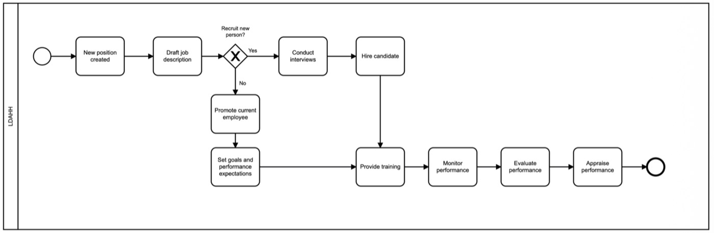
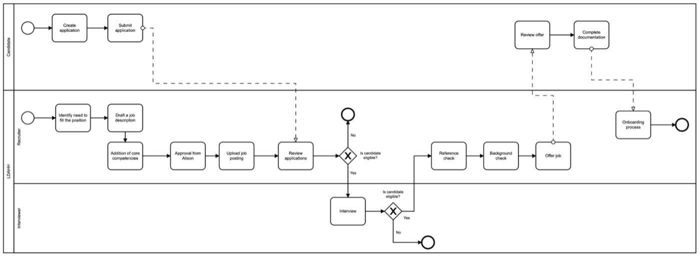
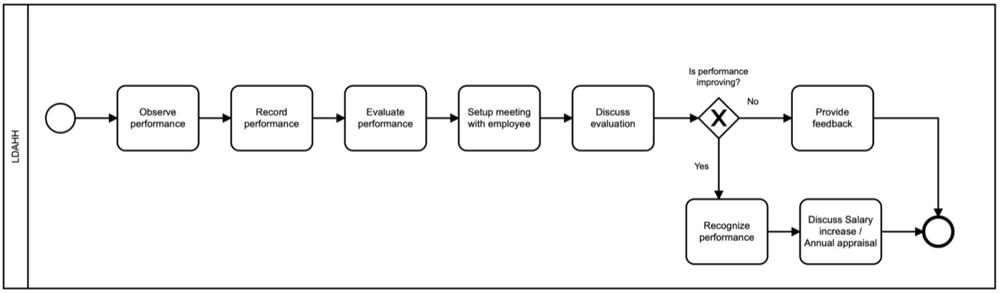
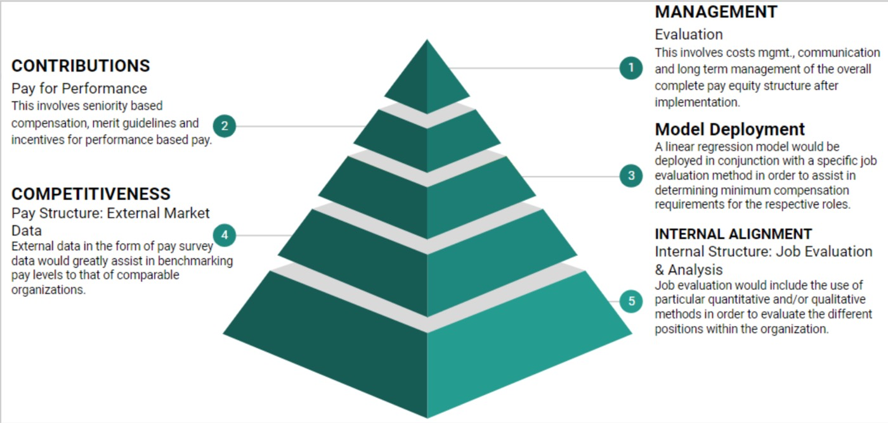
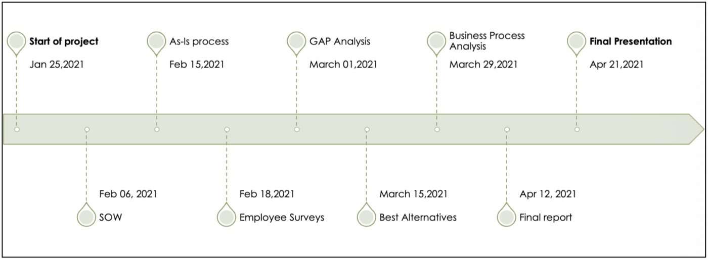
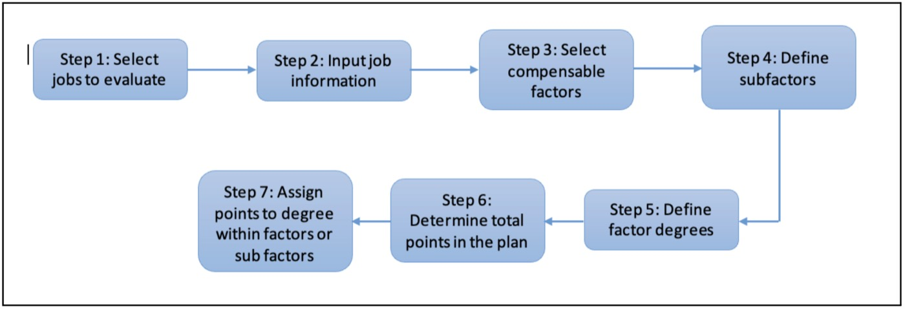
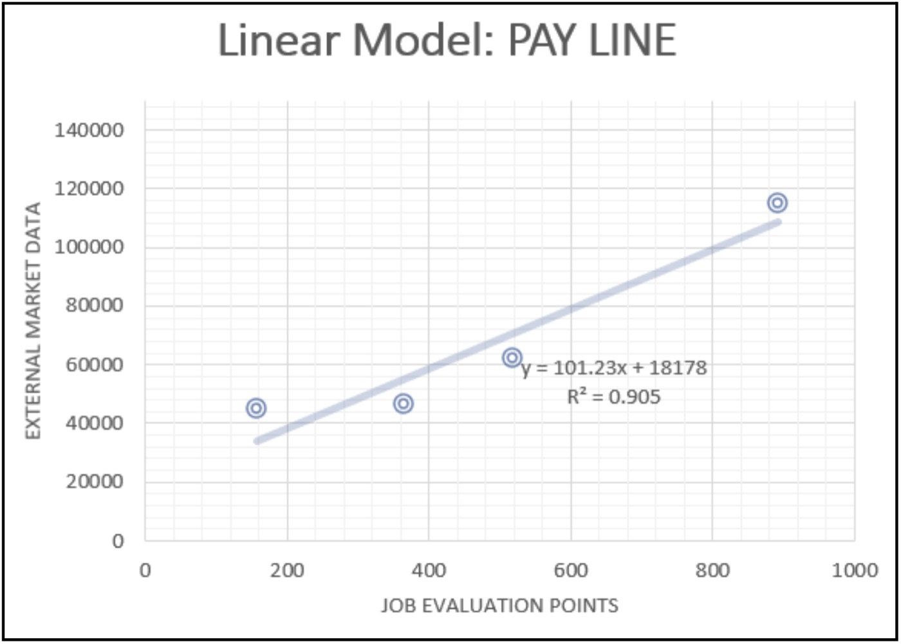

Course Project | Business Analysis
Pay Equity Process Development
See project documentsOverview
This capstone consulting project was developed for the Learning Disabilities Association of Halton-Hamilton (LDAHH), a nonprofit organization focused on advocacy and support services for individuals with learning disabilities.
The objective was to analyze LDAHH’s existing HR and compensation workflows and develop a structured framework for building a fair, scalable, and transparent pay equity process.
The project combined:
- business analysis
- process mapping
- compensation benchmarking
- workflow design
- data analysis
- model development
The final deliverable was a practical framework LDAHH could use to begin implementing a long-term pay equity structure.
The Challenge
LDAHH did not have a formalized pay equity structure in place. Compensation decisions were largely influenced by role interpretation, qualifications, and experience, which created risks around:
- inconsistency
- subjectivity
- scalability
- compensation transparency
The organization needed a structured system that could:
- standardize compensation evaluation
- benchmark roles against external market data
- reduce bias in compensation decisions
- create a scalable framework for future growth
- support fair compensation practices across roles
At the same time, the solution needed to remain practical and realistic for a small nonprofit organization with limited resources.
My Role
As Project Manager on the Sheridan Consulting Team, I was responsible for coordinating project structure, delivery planning, process mapping, and supporting model development.
Key Responsibilities
- Developed project schedules and milestone timelines
- Created current-state (“as-is”) process maps
- Conducted business and compensation research
- Supported pay equity model development
- Participated in job analysis and evaluation activities
- Helped document future-state process recommendations
- Coordinated deliverables and project tracking across the consulting team
Project Approach
01 Current State Analysis
The project began with analyzing LDAHH’s existing HR workflows, including:
- hiring processes
- onboarding
- performance appraisal workflows
- compensation decision structures
Current-state process maps were created to identify operational gaps, dependencies, and opportunities for standardization.
High-level HR management workflow

Hiring process workflow

Performance appraisal workflow

02 Gap Analysis & Future-State Planning
The team identified major process risks within the existing compensation approach, including:
- subjectivity
- inconsistency
- lack of structured evaluation criteria
A future-state pay equity framework was then designed using layered compensation and benchmarking models.
The project also included:
- SWOT analysis
- SMART goal definition
- phased implementation recommendations
- timeline planning and milestone management
Pay equity framework pyramid

Project milestone timeline

03 Compensation Model Development
The consulting team designed a structured pay equity methodology using:
- job evaluation frameworks
- compensable factor analysis
- external salary benchmarking
- weighted scoring systems
- linear regression modeling
The selected methodology was the Point Method job evaluation system, which assigned weighted values to:
- skills
- responsibilities
- effort
- working conditions
The framework was then benchmarked against external nonprofit salary data from Charity Village to create a predictive compensation model.
04 Data & Model Analysis
The project incorporated quantitative analysis to evaluate the effectiveness of the compensation model.
The final regression model achieved:
- R = 0.951
- R² = 0.905
These metrics demonstrated a strong relationship between job evaluation scoring and external market compensation benchmarks.
The final deliverable included:
- weighted compensation matrices
- benchmark role evaluations
- market analysis
- linear compensation modeling
- implementation recommendations
- process limitations and scalability considerations
Point method workflow diagram

Compensation/pay line regression model

Outcomes
- Developed a foundational pay equity framework for a nonprofit organization
- Created current-state and future-state process documentation
- Built structured job evaluation and compensation methodologies
- Integrated external market benchmarking into compensation modeling
- Delivered data-backed recommendations for scalable compensation practices
- Combined business analysis, process design, and quantitative modeling into one consulting engagement
What This Project Strengthened
This project strengthened my ability to:
- Translate operational ambiguity into structured workflows
- Conduct process analysis and future-state planning
- Coordinate multi-phase consulting deliverables
- Combine qualitative and quantitative analysis in decision-making
- Build stakeholder-focused recommendations grounded in research and data
- Communicate complex frameworks in a practical and implementable way
Core Skills Demonstrated
Business Analysis · Process Mapping · Future-State Design · Stakeholder Coordination · Compensation Benchmarking · Workflow Design · Data Analysis · Project Planning · Process Improvement · Quantitative Modeling · Strategic Documentation